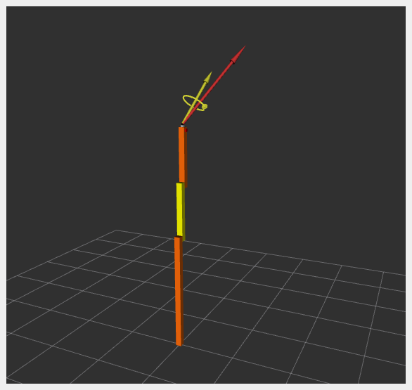

Industrial Robot with Externally Connected Sensor
This example shows how an externally connected sensor can be accessed:
Communication is done using a proprietary API to interface with the robot control box.
Joint data are exchanged simultaneously.
Sensor data are exchanged independently of joint data.
Examples: KUKA RSI and FTS connected to independent PC with ROS 2.
A 3D Force-Torque Sensor (FTS) is simulated using a SensorInterface that generates random sensor readings.
Tutorial Steps
1. Launch RRBot Visualization
ros2 launch ros2_control_demo_example_5 view_robot.launch.py
Note: Warning
Invalid frame ID "odom"is expected whilejoint_state_publisher_guiinitializes. It provides a GUI to set a random configuration for RRBot, shown in RViz.
2. Launch RRBot with External Sensor
ros2 launch ros2_control_demo_example_5 rrbot_system_with_external_sensor.launch.py
This starts the robot hardware, controllers, and opens RViz. Console output will include internal state logs (for demonstration only).
If RViz shows two orange and one yellow rectangles, the system has started correctly.
3. Verify Hardware Interfaces
ros2 control list_hardware_interfaces
Expected output:
command interfaces
joint1/position [available] [claimed]
joint2/position [available] [claimed]
state interfaces
joint1/position
joint2/position
tcp_fts_sensor/force.x
tcp_fts_sensor/force.y
tcp_fts_sensor/force.z
tcp_fts_sensor/torque.x
tcp_fts_sensor/torque.y
Check hardware components:
ros2 control list_hardware_components
Expected output:
Hardware Component 1
name: ExternalRRBotFTSensor
type: sensor
plugin name: ros2_control_demo_example_5/ExternalRRBotForceTorqueSensorHardware
state: id=3 label=active
command interfaces
Hardware Component 2
name: RRBotSystemPositionOnly
type: system
plugin name: ros2_control_demo_example_5/RRBotSystemPositionOnlyHardware
state: id=3 label=active
command interfaces
joint1/position [available] [claimed]
joint2/position [available] [claimed]
4. Check Running Controllers
ros2 control list_controllers
Expected output:
forward_position_controller[forward_command_controller/ForwardCommandController] active
fts_broadcaster[force_torque_sensor_broadcaster/ForceTorqueSensorBroadcaster] active
joint_state_broadcaster[joint_state_broadcaster/JointStateBroadcaster] active
5. Send Commands to RRBot
a. Manual Control:
ros2 topic pub /forward_position_controller/commands std_msgs/msg/Float64MultiArray "data:
- 0.5
- 0.5"
b. Using Demo Node:
ros2 launch ros2_control_demo_example_5 test_forward_position_controller.launch.py
Example log output:
[INFO] Writing commands:
0.50 for joint 'joint1'
0.50 for joint 'joint2'
6. Access Force-Torque Sensor Data
ros2 topic echo /fts_broadcaster/wrench
Expected output:
header:
stamp:
sec: 1676444704
nanosec: 332221422
frame_id: tool_link
wrench:
force:
x: 1.21
y: 2.32
z: 3.43
torque:
x: 4.54
y: 0.65
z: 1.76
Sensor data is visualized in RViz:

Files Used for This Demo
Launch file: rrbot_system_with_external_sensor.launch.py
Controllers YAML: rrbot_with_external_sensor_controllers.yaml
URDF:
RViz Config: rrbot.rviz
Hardware Interface Plugins: